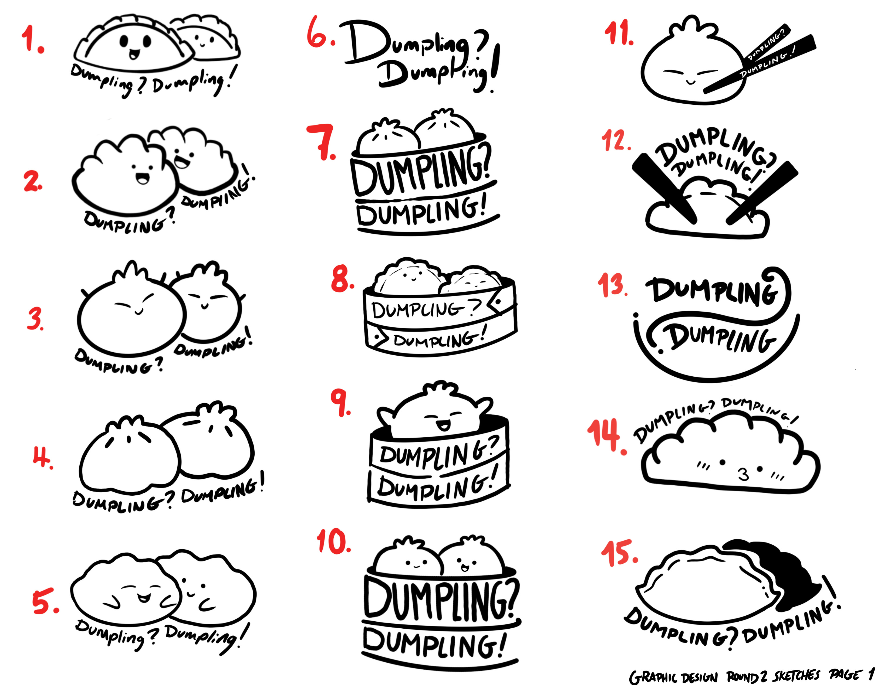
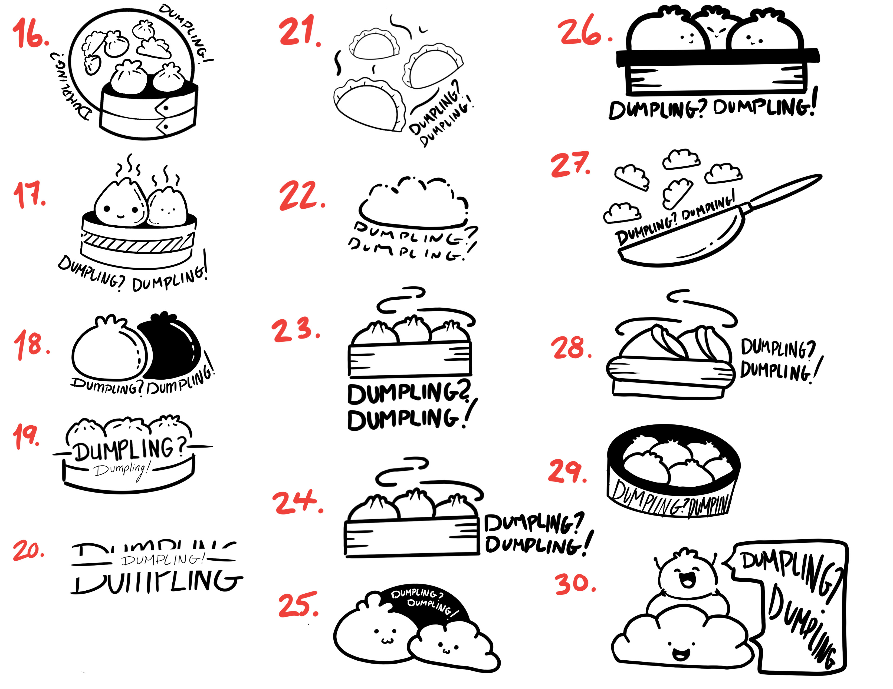
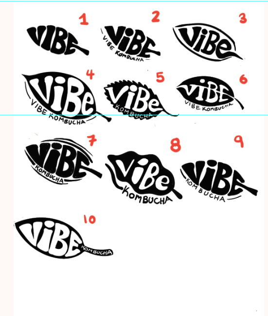
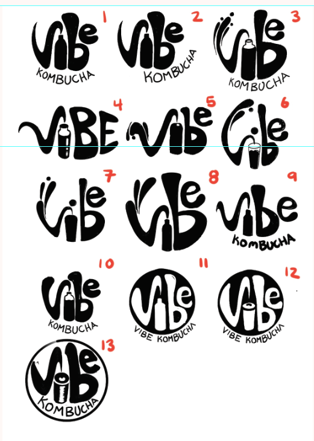
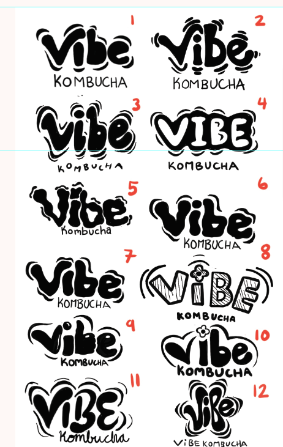

Weekly Schedule · Assignment 1: Logo Re-design
WEEK 3
Agenda:
1) Check-in
2) View Logo Lawsuit Slide Show
3) Breakout with sketching partners
4) Prof and student sketching partners meet one on one
5) You keep sketching based on feedback
6) Recap
DUE WEEK 4 - 2nd round of sketches
Due at the beginning of class. Pencil sketches on paper only, No digital - Labeled Week 4
20 numbered sketches If you have 3 then do 30 sketches. Do not look at it as extra work - it's you progressing to be a better designer.
1) Milestones checked.
2) You will discuss designs with your sketch partner.
3) Prof and sketching partners meet as a creative team and we will eliminate the weak.
4) You will begin flushing out your new sketches on paper.
- These sketches are going to be variations of two designs that you feel strongly about.
- No colour or type at this point.
- Once you have nailed down the concept for symbol/graphic then we will discover colour and type solutions.
- You will be marked by showing the progression and development of both of your selected concepts.


Second Round of Sketches Student Samples


